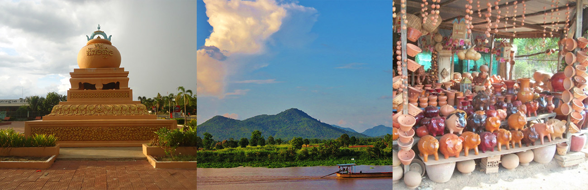

Kampong Chhnang (Khmer: កំពង់ឆ្នាំង [kɑmpɔŋ cʰnaŋ]; meaning 'Port of Pottery') is one of the central provinces (khaet) of Cambodia. Neighboring provinces are (from north clockwise) Kampong Thom, Kampong Cham, Kandal, Kampong Speu, and Pursat. The provincial capital is the city of Kampong Chhnang. The name translates from Khmer literally to Port of Pottery. Archaeological remains from the area have revealed among many other findings artifacts from Dvaravati, a former kingdom in present-day Thailand, dating to the 6th through 11th centuries.[7] Kampong Chhnang province centuries ago was a coastal city on the route between China and India; due to sedimentation from the Mekong river, the coast line moved much farther to sea. When the Tonle Sap river changed its course, the city lost its main water source and thus was deserted, the population moving to a city called Kampong Tralach. A city gradually formed around it, bring new life to Kampong Chhnang. A museum presents the archaeological record of the city's history.
